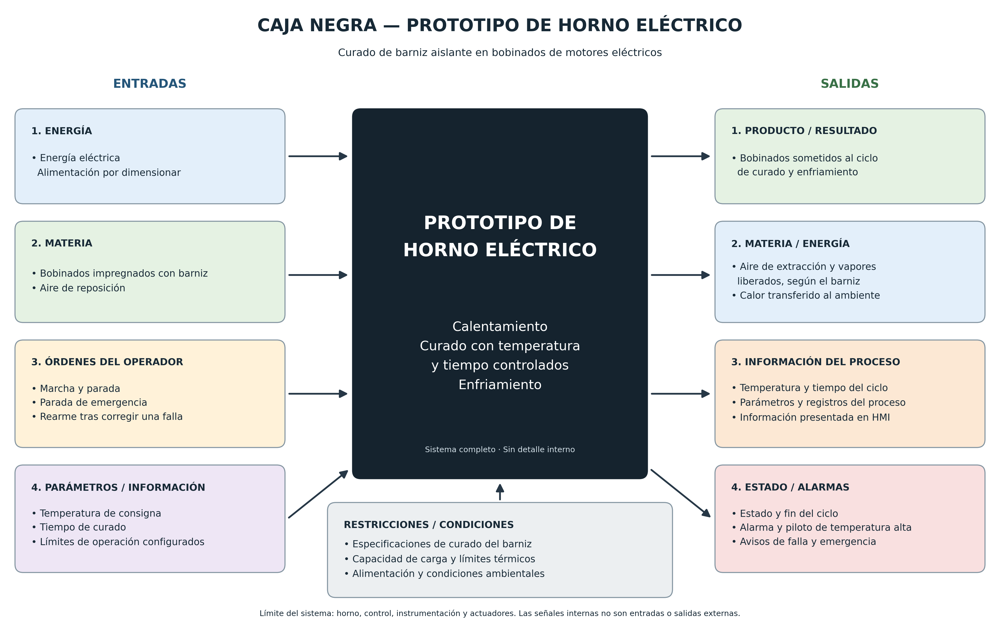
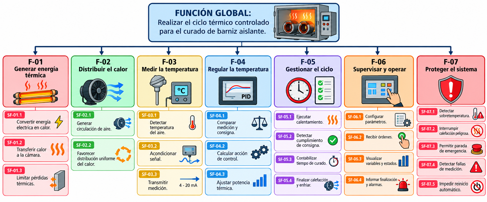
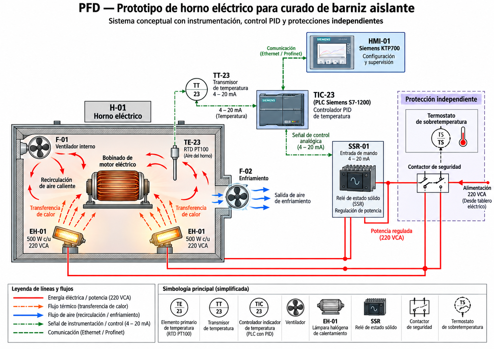

INGENIERÍA CONCEPTUAL
Qué debe hacer KOVAX y cómo proponemos resolverlo
Después de elegir el proyecto para Kovati EIRL, la definición funcional organiza las operaciones que debe realizar el horno. El propósito es llevar el curado del barniz aislante en bobinados a un ciclo con temperatura y tiempo controlados, supervisión del operador y respuesta ante fallas.
Propuesta de diseño basada en el informe técnico del proyecto.
Propósito y límites del sistema
La semana 2 presenta la necesidad de automatizar la regulación térmica del curado. En esta entrega, esa necesidad se expresa como una función global y se descompone en operaciones de calentamiento, medición, regulación, ventilación, supervisión y protección. Esta organización permite comparar conceptos de solución y preparar la especificación del sistema.
Función global
Realizar un ciclo térmico controlado para el curado de barniz aislante en bobinados de motores eléctricos.
El límite del prototipo comprende la cámara, la calefacción, la ventilación, la instrumentación, el controlador, la interfaz de operación y las protecciones. Recibe bobinados previamente impregnados, energía y órdenes del operador. Las actividades de rebobinado, preparación del barniz e impregnación corresponden al proceso previo al tratamiento térmico.
La propuesta se desarrolla a escala experimental. Su evaluación considera la respuesta de temperatura y tiempo, la operación de los equipos y la actuación de las protecciones bajo las condiciones de ensayo que se definan.
Caja negra e intercambios con el entorno
La caja negra representa al horno como un sistema completo. Permite identificar qué recibe, qué transformación debe realizar y qué entrega, junto con las restricciones del barniz, la carga y los límites térmicos del prototipo.

Diagrama original del informe. Organiza los intercambios externos de materia, energía e información y las condiciones que limitan el proceso.

Entradas
- Materia
- Bobinados impregnados y aire de reposición.
- Energía
- Alimentación eléctrica para calefacción, control y ventilación.
- Información
- Consigna de temperatura, tiempo de curado y límites de operación.
- Órdenes
- Marcha, parada, emergencia y rearme.
Salidas
- Materia
- Bobinados sometidos al ciclo térmico, aire extraído y vapores asociados al producto utilizado.
- Energía
- Calor transferido al ambiente durante la operación y el enfriamiento.
- Información
- Temperatura, tiempo, parámetros y estado del ciclo.
- Avisos
- Fin de ciclo, temperatura alta, fallas y emergencia.
Las conexiones entre PT100, transmisor, PLC y SSR pertenecen al funcionamiento interno del prototipo. A partir de ellas se organiza la adquisición de la temperatura y la actuación sobre la potencia de calentamiento.
Siete funciones principales y 24 subfunciones
El informe organiza la función global en siete funciones principales, identificadas de F-01 a F-07. Cada una agrupa actividades concretas que orientan la elección de componentes y la posterior programación. Abre cada función para consultar sus subfunciones.
F-01Generar energía térmica3 subfunciones
Aportar el calor necesario para elevar la temperatura de la cámara hasta las condiciones de curado.
- SF-01.1Convertir energía eléctrica en calor.
- SF-01.2Transferir el calor al interior de la cámara.
- SF-01.3Limitar las pérdidas térmicas al ambiente.
F-02Distribuir el calor2 subfunciones
Favorecer la circulación del aire caliente dentro de la cámara y su distribución alrededor de la carga.
- SF-02.1Generar circulación de aire en la cámara.
- SF-02.2Favorecer la distribución uniforme del calor.
F-03Medir la temperatura3 subfunciones
Obtener la temperatura del aire interior y entregar una señal utilizable por el controlador.
- SF-03.1Detectar la temperatura del aire interior.
- SF-03.2Acondicionar la señal de medición.
- SF-03.3Transmitir la información al controlador.
F-04Regular la temperatura3 subfunciones
Ajustar el aporte de energía según la diferencia entre la temperatura medida y la consigna.
- SF-04.1Comparar la temperatura medida con la consigna.
- SF-04.2Calcular la acción de control.
- SF-04.3Ajustar la potencia de calentamiento.
F-05Gestionar el ciclo de curado4 subfunciones
Coordinar el calentamiento, la permanencia a temperatura y el enfriamiento con los parámetros del proceso.
- SF-05.1Ejecutar la etapa de calentamiento.
- SF-05.2Detectar el cumplimiento de la consigna térmica.
- SF-05.3Contabilizar el tiempo programado de curado.
- SF-05.4Finalizar la calefacción y ejecutar el enfriamiento.
F-06Supervisar y operar el sistema4 subfunciones
Permitir la configuración del ciclo, las órdenes de operación y la consulta de variables y estados.
- SF-06.1Permitir la configuración de parámetros.
- SF-06.2Recibir órdenes de inicio y parada.
- SF-06.3Visualizar temperatura, tiempo y estado del proceso.
- SF-06.4Informar la finalización del ciclo y las alarmas.
F-07Proteger el sistema5 subfunciones
Identificar condiciones anormales y definir la respuesta de protección del horno.
- SF-07.1Detectar condiciones de sobretemperatura.
- SF-07.2Interrumpir la calefacción ante condiciones peligrosas.
- SF-07.3Permitir la parada de emergencia.
- SF-07.4Detectar fallas de medición de temperatura.
- SF-07.5Impedir el reinicio automático ante fallas con bloqueo.

Organización funcional incluida en el informe. La correspondencia entre funciones y subfunciones conserva los códigos de la documentación técnica.

F-01 y F-02 aportan las condiciones térmicas del proceso. F-03 proporciona la medición que utiliza F-04 para regular la temperatura. F-05 coordina las etapas del ciclo, mientras F-06 permite operarlo y F-07 define la respuesta ante condiciones anormales.
De las funciones a las alternativas conceptuales
La matriz morfológica del informe reúne diferentes medios para cumplir cada función, entre ellos calefacción halógena, resistencias o gas; PT100 o termopar; PLC o plataformas de desarrollo electrónico; y distintas formas de actuación, supervisión y protección. La combinación de estas opciones da lugar a tres conceptos comparables.
| Función | Concepto A | Concepto B | Concepto C |
|---|---|---|---|
| Generación de calor | Lámparas halógenas | Resistencias tubulares | Lámparas halógenas |
| Medición de temperatura | RTD PT100 | Termopar tipo K | RTD PT100 |
| Control del proceso | PLC Siemens S7-1200 | Arduino Mega | Raspberry Pi |
| Regulación de temperatura | PID | ON/OFF | PID |
| Regulación de potencia | SSR analógico | SSR digital | Regulador SCR |
| Circulación de aire | Ventilador axial | Ventilador centrífugo | Ventilador axial |
| Supervisión | HMI industrial | Pantalla LCD | Interfaz web |
| Temporización | Temporizador en PLC | Temporizador en microcontrolador | Temporizador en microcontrolador |
| Protección térmica | Termostato independiente | Limitador electrónico | Termostato independiente |
Criterios que orientan la comparación
El informe asigna mayor peso a la precisión y estabilidad térmica y a la seguridad de operación. También considera confiabilidad, facilidad de implementación, costo, disponibilidad y mantenimiento. La evaluación ponderada utiliza una escala de 1 a 5 para expresar el desempeño esperado de cada concepto.
Concepto A
4,40/ 5
PLC industrial y HMIConcepto B
3,40/ 5
Arduino Mega y LCDConcepto C
3,40/ 5
Raspberry Pi e interfaz webConsultar los pesos y las calificaciones
| Criterio | Peso | A | B | C |
|---|---|---|---|---|
| Precisión y estabilidad térmica | 25 % | 5 | 3 | 4 |
| Seguridad de operación | 25 % | 5 | 3 | 4 |
| Confiabilidad del sistema | 15 % | 5 | 3 | 3 |
| Facilidad de implementación | 10 % | 3 | 4 | 2 |
| Costo de implementación | 10 % | 2 | 5 | 3 |
| Disponibilidad de componentes | 10 % | 4 | 4 | 3 |
| Mantenimiento y soporte técnico | 5 % | 5 | 3 | 3 |
El total resulta de sumar cada calificación multiplicada por su peso. Las ponderaciones suman 100 %. Fuente del cuadro y de los puntajes, «Evaluación técnica de alternativas» del informe.
El Concepto A reúne la preferencia técnica del informe, apoyada en la integración del control, la temporización, la HMI y las protecciones independientes. Las puntuaciones corresponden a una evaluación preliminar de diseño, sujeta a la compatibilidad de los componentes y a las verificaciones posteriores.
Concepto de solución propuesto para KOVAX
La propuesta integra una cámara térmicamente aislada, calefacción eléctrica, recirculación de aire y un lazo de regulación de temperatura supervisado por el PLC Siemens S7-1200. La HMI concentra la configuración de consigna y tiempo, las órdenes de operación y la consulta de estados y alarmas.
La temperatura medida realimenta al controlador. La regulación modifica la potencia media de los calefactores para aproximar la temperatura a la consigna, mientras la lógica secuencial coordina la ventilación y las transiciones entre etapas.

PFD original de la propuesta documentada en el informe. Sus componentes, comunicaciones y protecciones representan la configuración de diseño.

| Función | Medio previsto en el diseño |
|---|---|
| F-01 · Generar calor | Dos lámparas halógenas de 500 W a 220 VCA, con una potencia instalada total de 1000 W, dentro de una cámara aislada. |
| F-02 · Distribuir calor | Ventilación forzada para recircular el aire interior alrededor del bobinado. |
| F-03 · Medir | RTD PT100 y transmisor con salida de 4–20 mA, configurado para un rango de 0–150 °C. |
| F-04 · Regular | Regulación de temperatura en el PLC y actuación mediante SSR de mando analógico, con la interfaz de salida compatible por verificar. |
| F-05 · Gestionar el ciclo | Secuencia de calentamiento, temporización de curado y enfriamiento programada en el PLC. |
| F-06 · Operar y supervisar | HMI industrial para configurar temperatura y tiempo y consultar estados y alarmas. |
| F-07 · Proteger | Termostato independiente de sobretemperatura, parada de emergencia y corte de energía de calefacción independiente del SSR. |
Ciclo de funcionamiento previsto
La secuencia propuesta relaciona las funciones térmicas con la intervención del operador. El inicio del tiempo de curado se vincula al cumplimiento de la consigna medida en el aire de la cámara.
Configurar y habilitar
El operador establece la temperatura y el tiempo de curado desde la HMI. La lógica comprueba las condiciones de habilitación y recibe la orden de marcha.
Supervisión y protecciónCalentar y regular
Se aporta energía a los calefactores y se activa la recirculación prevista. La medición de temperatura realimenta al PLC para ajustar la acción de control hasta alcanzar la consigna.
Calefacción, circulación, medición y regulaciónTemporizar el curado
Al alcanzarse la consigna del aire comienza el conteo del tiempo programado. La regulación mantiene el aporte térmico de acuerdo con la temperatura medida.
Regulación y gestión del cicloEnfriar y finalizar
Al concluir el tiempo se desactiva la calefacción y se ejecuta la etapa de enfriamiento mediante el ventilador correspondiente. La HMI presenta el estado y la finalización del ciclo.
Gestión del ciclo y supervisión
La supervisión de fallas acompaña a la secuencia. Las funciones de protección prevén interrumpir la calefacción ante condiciones peligrosas, informar la causa y requerir una intervención deliberada del operador para el rearme después de una falla con bloqueo.
Resultados de la definición conceptual
La definición funcional relaciona el propósito del proyecto con siete funciones principales y 24 subfunciones. La caja negra delimita los intercambios externos, mientras que la estructura funcional explica cómo se coordinan las operaciones necesarias para el tratamiento térmico.
La comparación de conceptos proporciona una base documental para la propuesta con PLC industrial, PT100, regulación de potencia, ventilación y HMI. Con esta base, la semana 4 desarrolla la SRS y la arquitectura, y la semana 5 describe la filosofía de control y los diagramas.
Aspectos que deben precisarse en el diseño y las pruebas
- Compatibilidad de las señales. Definir la adquisición de 4–20 mA y la interfaz necesaria para actuar sobre el SSR desde el PLC.
- Condiciones del barniz y de la carga. Establecer la receta con la ficha técnica del producto y evaluar la respuesta térmica del bobinado.
- Distribución de temperatura. Complementar la medición del aire con verificaciones que permitan evaluar la uniformidad de la cámara y la temperatura de la carga.
- Protección y recuperación. Verificar el corte de calefacción, la sobretemperatura, la emergencia y las condiciones de rearme.
Diagramas y base documental
Base documental de esta página
El contenido se organiza a partir del informe LaTeX consolidado compartido en Horno_LaTeX_HAZOP.zip. Se emplean los apartados «Análisis funcional del sistema», «Descomposición funcional del sistema», «Planteamiento de alternativas de solución», «Matriz morfológica», «Evaluación técnica de alternativas», «Selección de la alternativa final» y «Descripción conceptual del sistema propuesto».
La caja negra, la estructura funcional y el PFD se reproducen desde los archivos originales incluidos en el ZIP. El material del informe consolidado sirve de apoyo para explicar la etapa de definición conceptual de la semana 3.